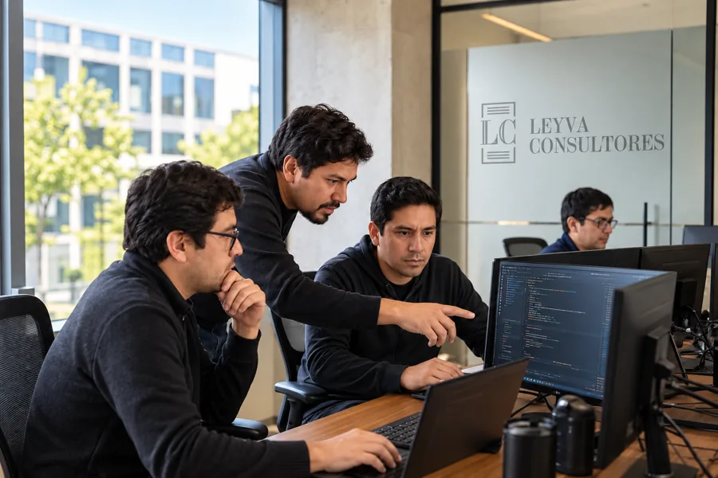
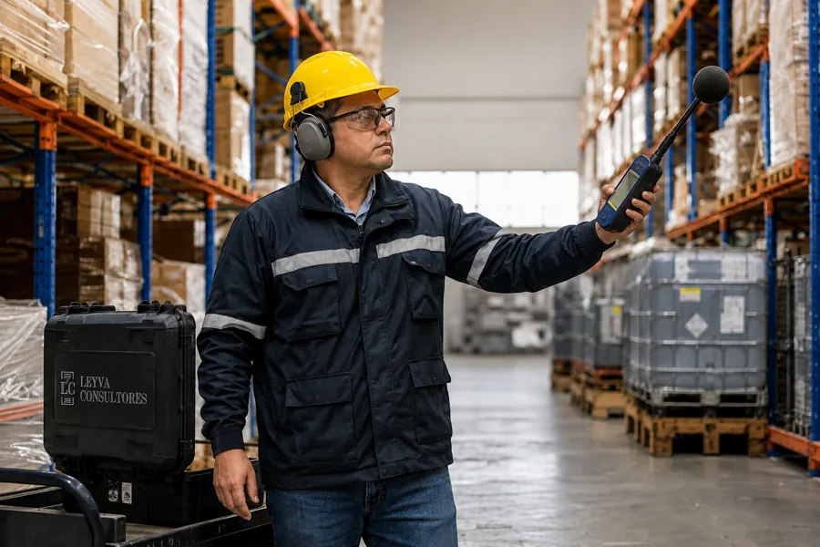
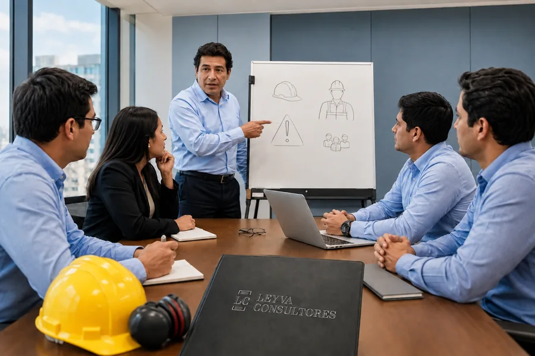

NUESTRA EXPERIENCIA
El conocimiento que
tu empresa necesita.
Consultoría ISO, monitoreos ocupacionales, auditorías y capacitación empresarial. Encuentra el acompañamiento que se ajusta a tu próximo reto.
21 servicios disponibles
Sistemas de gestión ISO
Estándares internacionales, integrados a tus procesos y a la realidad de tu empresa.
Sistemas de gestión ISO
ISO 9001: gestión de calidad
Fortalece tus procesos y la confianza de tus clientes con un sistema de gestión de calidad adaptado a tu empresa.
Explorar servicioSistemas de gestión ISO
ISO 14001: gestión ambiental
Integra la gestión ambiental a tus operaciones y trabaja sobre los aspectos e impactos de tu actividad.
Explorar servicioSistemas de gestión ISO
ISO 45001: seguridad y salud en el trabajo
Desarrolla un sistema de gestión de SST que integre prevención, participación y mejora continua.
Explorar servicioSistemas de gestión ISO
ISO 37001: gestión antisoborno
Fortalece las prácticas de integridad y la prevención del soborno en tu organización.
Explorar servicio
Sistemas de gestión ISO
ISO 27001: seguridad de la información
Organiza la protección de tu información con un sistema de gestión orientado a los riesgos del negocio.
Explorar servicioSistemas de gestión ISO
ISO 22301: continuidad del negocio
Prepara tu organización para responder a interrupciones y sostener sus actividades prioritarias.
Explorar servicioMonitoreos ocupacionales
Información para evaluar condiciones de trabajo y orientar medidas preventivas.

Monitoreos ocupacionales
Monitoreo de agentes físicos
Evalúa condiciones de iluminación, ruido y estrés térmico en los puestos de trabajo.
Explorar servicioMonitoreos ocupacionales
Monitoreo de agentes biológicos
Evalúa factores biológicos en el ambiente de trabajo y obtén información para gestionar la prevención.
Explorar servicioMonitoreos ocupacionales
Evaluación de riesgos ergonómicos
Analiza las exigencias de los puestos de trabajo y las oportunidades para mejorar su diseño.
Explorar servicioMonitoreos ocupacionales
Evaluación de factores psicosociales
Comprende los factores organizacionales que influyen en la experiencia de trabajo de tus equipos.
Explorar servicioAuditoría y responsabilidad social
Prácticas de gestión, integridad y comercio ético que fortalecen la confianza.
Auditoría y responsabilidad social
Auditoría del sistema de gestión de SST
Revisa tu sistema de seguridad y salud en el trabajo e identifica oportunidades de mejora.
Explorar servicioAuditoría y responsabilidad social
Preparación para auditorías SMETA
Acompañamiento para revisar prácticas laborales, de seguridad, ambientales y de ética comercial.
Explorar servicioAuditoría y responsabilidad social
Introducción a SMETA y comercio ético
Ayuda a tu equipo a comprender el enfoque de las auditorías de comercio ético.
Explorar servicioAuditoría y responsabilidad social
Política salarial y gestión responsable
Fortalece la claridad de tus criterios de compensación y su comunicación dentro de la empresa.
Explorar servicioAuditoría y responsabilidad social
Prevención del hostigamiento sexual laboral
Desarrolla capacidades para reconocer situaciones de hostigamiento y fortalecer una cultura de respeto.
Explorar servicioCapacitación empresarial
Conocimiento aplicable a las tareas, los equipos y la cultura de prevención.

Capacitación empresarial
Capacitación en seguridad y salud en el trabajo
Refuerza los conocimientos de tu equipo sobre prevención y gestión de la SST.
Explorar servicioCapacitación empresarial
Identificación de peligros y evaluación de riesgos
Capacita a tu equipo para reconocer peligros y comprender cómo se evalúan los riesgos en el trabajo.
Explorar servicioCapacitación empresarial
Investigación y reporte de incidentes
Fortalece la capacidad de registrar, analizar y aprender de los incidentes de trabajo.
Explorar servicioCapacitación empresarial
Introducción a la ergonomía laboral
Acerca a tu equipo prácticas y conceptos para reconocer exigencias ergonómicas en sus tareas.
Explorar servicioCapacitación empresarial
Manejo de materiales peligrosos
Prepara a tu equipo para reconocer riesgos asociados a materiales peligrosos y trabajar con mayor información.
Explorar servicioCapacitación empresarial
Prevención de incendios y evacuación
Refuerza la preparación de tus equipos para prevenir incendios y comprender la organización de una evacuación.
Explorar servicioEL SIGUIENTE PASO
Las grandes mejoras
empiezan con una
conversación.
Cuéntanos qué necesita tu empresa. Te ayudamos a definir por dónde empezar.
+51 969 200 366 ↗comercial@lc.com.pe ↗Jirón Apurímac 292 · Cercado de Lima, Perú